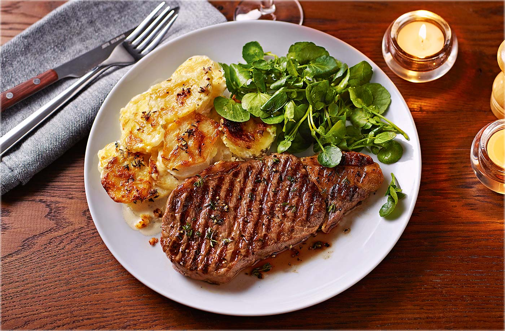

Spaghetti Bolognese
Everyone needs a basic spaghetti bolognese recipe that still tastes great, no matter how simple. Get that depth of flavour by cooking the sauce very gently until it’s super rich. This spag bol is designed to be a low cost recipe.

Steak Dinner
Treat someone to a classic steak Diane for supper and impress with your flambé skills. For the ultimate luxury, we’ve gone for fillet steak

Chicken Soup
Use up leftover chicken in this rustic soup with garlic yogurt. Best served with cheese scones